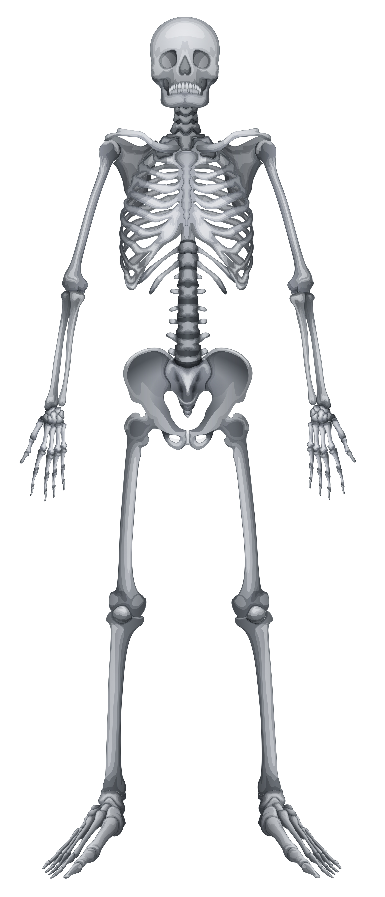

Clique nos pontinhos brilhantes do corpo:

Selecione uma parte
Sistema Anatômico📌 Função Principal
Clique em qualquer pontinho brilhante no corpo humano ao lado para examinar a função exata no organismo.
🧪 Composição & Estrutura
As informações detalhadas sobre a anatomia, tecidos ou ossos aparecerão aqui.
💡 Curiosidade SciLab
Sabia que o corpo humano possui factos incríveis? Explore os pontos para os descobrir!